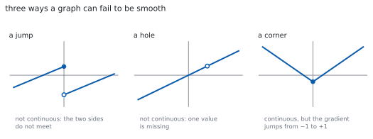
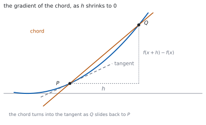

HL 5.12 — Continuity, differentiability and first principles（連続性・微分可能性と第一原理）
- 極限（limit）が収束するか発散するかを、ことばで説明できる。
- 連続（continuous）・微分可能（differentiable）の意味を、グラフで言える。
- 第一原理（from first principles）で、多項式の導関数を求められる。
- \(\lim_{h \to 0}\) を、答えが出るまで書き続けられる。
- 高次導関数を求め、\(\dfrac{\mathrm{d}^{n}y}{\mathrm{d}x^{n}}\) と \(f^{(n)}(x)\) の記号を使える。
- 規則を見つけて、帰納法で示せる（HL 1.15）。
The idea
1. Limits（極限）
シラバスは、こう書いています。
Understanding of limits (convergence and divergence).
\(x\) をある値に近づけたとき、\(f(x)\) が\(1\) つの値に近づくなら収束（convergence）、近づかないなら発散（divergence）です（SL 5.1）。
\(x = a\) での値と、\(x \to a\) での極限は別ものです。穴があいていても、極限はあります。
無限等比級数で見た「近づくけれど、たどり着かない」と同じ考え方です（SL 1.8）。
2. Continuity（連続性）
ペンを離さずにかけるなら、そこで連続です。切れ目や穴があれば、連続ではありません。

シラバスにこう書いてあります。
In examinations, students will not be asked to test for continuity and differentiability.
ことばで説明できれば十分です。\(\varepsilon\)–\(\delta\) のような形式的な定義は要りません。
3. Differentiability（微分可能性）
接線が \(1\) 本に決まるなら、そこで微分可能です。
図 1 の右のように角（corner）があると、左から来た傾きと右から来た傾きがちがいます。接線が決まらないので、微分できません。
微分可能なら連続です。 逆は成り立ちません。角のある \(y = \lvert x \rvert\) が、その例です。
4. The derivative from first principles（第一原理による微分）
公式集の 5.12 の欄にあります。
Derivative of \(f(x)\) from first principles
\[ y = f(x) \ \Rightarrow \ \frac{\mathrm{d}y}{\mathrm{d}x} = f'(x) = \lim_{h \to 0}\left(\frac{f(x+h)-f(x)}{h}\right) \tag{1}\]
分数の中身は、\(2\) 点を結ぶ直線（割線）の傾きです（SL 5.1）。

\(h = 0\) を代入してはいけません。 分母が \(0\) になります。先に約分して、\(h\) を消してから近づけます（第 2 節）。
5. Using it on polynomials（多項式でやってみる）
シラバスは、使う範囲をこう限っています。
Use of this definition for polynomials only.
手順は、いつも同じ \(4\) つです。
- \(f(x+h)\) を展開する。
- \(f(x)\) を引く。定数項と、\(h\) のない項が消えます。
- 分子のすべての項に \(h\) があるので、\(h\) で割る。
- \(h \to 0\) とする。\(h\) の残った項が消えます。
答えは、SL 5.3 のべき乗の公式と一致します。
6. Higher derivatives（高次導関数）
\(f'(x)\) をもう一度微分したものが \(f''(x)\) です。\(n\) 回微分したものを、シラバスは次の記号で書いています。
Familiarity with the notations \(\dfrac{\mathrm{d}^{n}y}{\mathrm{d}x^{n}}\), \(f^{(n)}(x)\).
\[ \frac{\mathrm{d}^{n}y}{\mathrm{d}x^{n}} = f^{(n)}(x) \tag{2}\]
\(f^{(n)}\) のかっこは、指数ではありません。 \(f^{3}(x)\) は \(\left(f(x)\right)^{3}\) の意味で使われることがあるので、\(f^{(3)}(x)\) とかっこを付けて区別します。
\(n\) 次の多項式は、\(n+1\) 回微分すると \(0\) になります。
7. Finding a pattern, then proving it（規則を見つけて示す）
\(n\) 回微分した形を聞かれたら、まず \(1\) 回、\(2\) 回、\(3\) 回と書き出して規則を見つけます。
見つけた形は、シラバスのとおり帰納法で示します。
Link to: proof by mathematical induction (AHL 1.15).
「\(n = k\) で成り立つとして、もう \(1\) 回微分する」のが帰納段階です（HL 1.15）。
TI-Nspire CX II には limit( があります。limit((f(x+h)-f(x))/h, h, 0) の形で入れられます。
高次導関数は、微分のテンプレート（menu → 4: Calculus → 1: Derivative）に階数を入れるか、d(d(f(x),x),x) のように重ねます。
答案には、式を書いてください。 式 1 の形から始め、展開・約分・極限の \(3\) 行を見せます。limit(...) と書いても点になりません。
Paper 1 では使えません。 このページの例題と演習は、すべて手で解けるようにしてあります。
Why it works
なぜ、先に約分するのか
\(h = 0\) をそのまま入れると \(\dfrac{0}{0}\) になります。これは値が決まらない形です（次の項目 AHL 5.13 で扱います）。
ところが \(h \neq 0\) のあいだは、分子と分母を \(h\) で割ってかまいません。割ったあとの式は、\(h = 0\) の近くでちゃんと値をもちます。
極限が見ているのは「\(h\) が \(0\) に近いときの値」であって、「\(h = 0\) のときの値」ではありません。ですから、約分してから近づけてよいのです。
なぜ、\(f(x+h)-f(x)\) の各項に \(h\) が残るのか
多項式なら、\(f(x+h)\) を展開した式は \(f(x)\) の項をそのまま含みます。
\[ (x+h)^{2} = x^{2}+2xh+h^{2}, \qquad (x+h)^{3} = x^{3}+3x^{2}h+3xh^{2}+h^{3} \]
\(h\) を含まない項だけが \(f(x)\) と同じで、引くと消えます。残るのは、すべて \(h\) をもつ項です。だからかならず \(h\) で割れます。
二項定理で見れば、\((x+h)^{n}\) の \(h^{0}\) の項が \(x^{n}\) です（SL 1.9）。
なぜ、角では微分できないのか
\(y = \lvert x \rvert\) を \(x = 0\) で考えます。式 1 の中身は
\[ \frac{\lvert 0+h \rvert-0}{h} = \frac{\lvert h \rvert}{h} \]
です。\(h > 0\) なら \(1\)、\(h < 0\) なら \(-1\) です。
右から近づけた値と、左から近づけた値がちがいます。 極限が \(1\) つに決まらないので、微分できません。
グラフでは「接線が \(1\) 本に決まらない」ことにあたります。
なぜ、微分可能なら連続なのか
\(f'(a)\) が存在するとします。\(h\) が小さいとき
\[ f(a+h)-f(a) = h \cdot \frac{f(a+h)-f(a)}{h} \]
です。右辺は「\(0\) に近づくもの」かける「\(f'(a)\) に近づくもの」なので、\(0\) に近づきます。
つまり \(f(a+h) \to f(a)\) で、これが連続だということです。
逆は成り立ちません。 連続でも角があれば微分できません。
Worked examples
問題文は英語です。意味が理解できなかったら、問題文の下の「日本語訳」を開いてください。解説は日本語です。
例題も演習も、すべて電卓なしで解けます。 Paper 1 のつもりで解いてください。
例題 1 Use the definition of the derivative to find \(f'(x)\) for \(f(x) = x^{2}\).
日本語訳
導関数の定義を使って、\(f(x) = x^{2}\) の \(f'(x)\) を求めなさい。
式 1 に入れます。
\[ f(x+h) = (x+h)^{2} = x^{2}+2xh+h^{2} \]
\[ f(x+h)-f(x) = 2xh+h^{2} = h(2x+h) \]
\[ \frac{f(x+h)-f(x)}{h} = 2x+h \qquad (h \neq 0) \]
\[ f'(x) = \lim_{h \to 0}\,(2x+h) = 2x \]
検算。 べき乗の公式と合うかを見ます。\(\dfrac{\mathrm{d}}{\mathrm{d}x}x^{2} = 2x\) ✓（SL 5.3）
検算（\(x = 1\) で）。 \(h = 0.1\) のとき割線の傾きは \(2.1\)、\(h = 0.01\) なら \(2.01\) ✓ \(2\) に近づいています。
\[f'(x) = \lim_{h \to 0}\frac{(x+h)^{2}-x^{2}}{h} = \lim_{h \to 0}\frac{2xh+h^{2}}{h}\]
\[= \lim_{h \to 0}\,(2x+h) = 2x\]
例題 2 Use the definition of the derivative to find \(f'(x)\) for \(f(x) = 3x^{2}-2x+1\).
日本語訳
導関数の定義を使って、\(f(x) = 3x^{2}-2x+1\) の \(f'(x)\) を求めなさい。
\[ f(x+h) = 3(x+h)^{2}-2(x+h)+1 = 3x^{2}+6xh+3h^{2}-2x-2h+1 \]
\(f(x)\) を引くと、\(h\) のない項がすべて消えます。
\[ f(x+h)-f(x) = 6xh+3h^{2}-2h = h(6x+3h-2) \]
\[ f'(x) = \lim_{h \to 0}\,(6x+3h-2) = 6x-2 \]
検算。 項ごとに微分したものと合うかを見ます。\(6x-2+0\) ✓
検算（定数項）。 \(+1\) はどこにも残りませんでした ✓ 定数の微分は \(0\) です。
\[f(x+h)-f(x) = 6xh+3h^{2}-2h\]
\[f'(x) = \lim_{h \to 0}\frac{h(6x+3h-2)}{h} = \lim_{h \to 0}\,(6x+3h-2) = 6x-2\]
例題 3 Use the definition of the derivative to find \(f'(x)\) for \(f(x) = x^{3}\).
日本語訳
導関数の定義を使って、\(f(x) = x^{3}\) の \(f'(x)\) を求めなさい。
展開がやまです。
\[ (x+h)^{3} = x^{3}+3x^{2}h+3xh^{2}+h^{3} \]
\[ f(x+h)-f(x) = 3x^{2}h+3xh^{2}+h^{3} = h\left(3x^{2}+3xh+h^{2}\right) \]
\[ f'(x) = \lim_{h \to 0}\left(3x^{2}+3xh+h^{2}\right) = 3x^{2} \]
検算。 \(h\) の付いた項だけが消えました ✓ 残ったのは \(3x^{2}\) です。
検算（公式と）。 \(\dfrac{\mathrm{d}}{\mathrm{d}x}x^{3} = 3x^{2}\) ✓ 一致します。
\[f'(x) = \lim_{h \to 0}\frac{(x+h)^{3}-x^{3}}{h} = \lim_{h \to 0}\frac{3x^{2}h+3xh^{2}+h^{3}}{h}\]
\[= \lim_{h \to 0}\left(3x^{2}+3xh+h^{2}\right) = 3x^{2}\]
例題 4 Let \(y = e^{2x}\).
(a) Find \(\dfrac{\mathrm{d}y}{\mathrm{d}x}\), \(\dfrac{\mathrm{d}^{2}y}{\mathrm{d}x^{2}}\) and \(\dfrac{\mathrm{d}^{3}y}{\mathrm{d}x^{3}}\).
(b) Write down a conjecture for \(\dfrac{\mathrm{d}^{n}y}{\mathrm{d}x^{n}}\) and prove it by induction.
日本語訳
\(y = e^{2x}\) とします。
(a) \(\dfrac{\mathrm{d}y}{\mathrm{d}x}\)、\(\dfrac{\mathrm{d}^{2}y}{\mathrm{d}x^{2}}\)、\(\dfrac{\mathrm{d}^{3}y}{\mathrm{d}x^{3}}\) を求めなさい。
(b) \(\dfrac{\mathrm{d}^{n}y}{\mathrm{d}x^{n}}\) を予想し、帰納法で証明しなさい。
(a) 連鎖律で、\(1\) 回ごとに \(2\) がかかります（SL 5.6）。
\[ \frac{\mathrm{d}y}{\mathrm{d}x} = 2e^{2x}, \qquad \frac{\mathrm{d}^{2}y}{\mathrm{d}x^{2}} = 4e^{2x}, \qquad \frac{\mathrm{d}^{3}y}{\mathrm{d}x^{3}} = 8e^{2x} \]
(b) \(2\)、\(4\)、\(8\) なので、予想は
\[ \frac{\mathrm{d}^{n}y}{\mathrm{d}x^{n}} = 2^{n}e^{2x} \]
です。\(n = 1\) で \(2e^{2x}\) ✓ 成り立ちます。
\(n = k\) で成り立つとします。もう \(1\) 回微分すると
\[ \frac{\mathrm{d}^{k+1}y}{\mathrm{d}x^{k+1}} = \frac{\mathrm{d}}{\mathrm{d}x}\left(2^{k}e^{2x}\right) = 2^{k}\cdot 2e^{2x} = 2^{k+1}e^{2x} \]
なので、\(n = k+1\) でも成り立ちます。
検算。 \(n = 3\) を式に入れます。 \(2^{3}e^{2x} = 8e^{2x}\) ✓ (a) と合います。
検算（\(n = 0\)）。 \(2^{0}e^{2x} = e^{2x}\) ✓ 微分する前の式にもどります。
(a) \(\dfrac{\mathrm{d}y}{\mathrm{d}x} = 2e^{2x}\), \(\ \dfrac{\mathrm{d}^{2}y}{\mathrm{d}x^{2}} = 4e^{2x}\), \(\ \dfrac{\mathrm{d}^{3}y}{\mathrm{d}x^{3}} = 8e^{2x}\)
(b) Conjecture: \(\dfrac{\mathrm{d}^{n}y}{\mathrm{d}x^{n}} = 2^{n}e^{2x}\) for all \(n \in \mathbb{Z}^{+}\).
True for \(n = 1\). Assume true for \(n = k\). Then
\[\frac{\mathrm{d}^{k+1}y}{\mathrm{d}x^{k+1}} = \frac{\mathrm{d}}{\mathrm{d}x}\left(2^{k}e^{2x}\right) = 2^{k+1}e^{2x}\]
so it is true for \(n = k+1\), and the result follows by induction.
試験ではこう書く
Differentiating repeatedly with the chain rule brings down a factor of \(2\) each time: \(\dfrac{\mathrm{d}y}{\mathrm{d}x} = 2e^{2x}\), \(\dfrac{\mathrm{d}^{2}y}{\mathrm{d}x^{2}} = 4e^{2x}\) and \(\dfrac{\mathrm{d}^{3}y}{\mathrm{d}x^{3}} = 8e^{2x}\).
The factors \(2\), \(4\), \(8\) are powers of \(2\), which suggests the conjecture \(\dfrac{\mathrm{d}^{n}y}{\mathrm{d}x^{n}} = 2^{n}e^{2x}\) for every positive integer \(n\).
Base case: for \(n = 1\) the formula gives \(2^{1}e^{2x} = 2e^{2x}\), which agrees with the first derivative found above, so the statement holds for \(n = 1\).
Inductive step: assume the statement holds for some positive integer \(n = k\), so that \(\dfrac{\mathrm{d}^{k}y}{\mathrm{d}x^{k}} = 2^{k}e^{2x}\). Differentiating both sides once more,
\[\frac{\mathrm{d}^{k+1}y}{\mathrm{d}x^{k+1}} = \frac{\mathrm{d}}{\mathrm{d}x}\left(2^{k}e^{2x}\right) = 2^{k}\left(2e^{2x}\right) = 2^{k+1}e^{2x}\]
which is the statement for \(n = k+1\). Since the statement is true for \(n = 1\), and its truth for \(n = k\) implies its truth for \(n = k+1\), it is true for all positive integers \(n\) by the principle of mathematical induction.
Common errors
\(\dfrac{0}{0}\) になり、そこで止まってしまいます（第 1 節）。
分子を因数分解して \(h\) を約分してから、\(h \to 0\) とします。
最後の行までは、毎行 \(\lim_{h \to 0}\) を書きます（式 1）。
\(h\) を消したあとで初めて外せます。途中で落とすと、点を引かれます。
\(2xh\) の項が要ります。\((x+h)^{3}\) なら \(3x^{2}h+3xh^{2}\) も要ります（第 2 節）。
この項が、答えそのものです。落とすと導関数が \(0\) になってしまいます。
\(y = \lvert x \rvert\) は \(x = 0\) で連続ですが、微分できません（第 3 節）。
向きはこちらだけです。微分可能 \(\Rightarrow\) 連続、ですが逆は成り立ちません。
\(f^{(3)}(x)\) は \(3\) 回微分、\(\left(f(x)\right)^{3}\) は \(3\) 乗です（第 6 節）。
かっこがあるかどうかで見分けます。
\(3\) 回ぶん書き出して形を見つけるのは予想です（第 7 節）。
prove と言われたら、帰納法の \(3\) 段（基底・仮定・\(k+1\)）まで書いてください。
Exercises
各問題に、折りたたみが \(3\) つ付いています。日本語訳、解答例（答案用紙に書くべきこと。英語です）、解説（なぜそうなるか。日本語です）。
まず自分で解いて、次に解答例と見くらべてください。解説は、合わなかったときだけ開けば十分です。
1 Use the definition of the derivative to find \(f'(x)\) for \(f(x) = 5x-2\).
日本語訳
導関数の定義を使って、\(f(x) = 5x-2\) の \(f'(x)\) を求めなさい。
\[f(x+h)-f(x) = \left(5x+5h-2\right)-\left(5x-2\right) = 5h\]
\[f'(x) = \lim_{h \to 0}\frac{5h}{h} = \lim_{h \to 0} 5 = 5\]
\(1\) 次式なので、約分したあとに \(h\) が残りません。極限を取る前から \(5\) です。
検算。 直線の傾きは、どこでも \(5\) ✓ 導関数が定数になるのは、そのためです。
検算（\(-2\)）。 引き算で消えました ✓ 上下にずらしても傾きは変わりません。
2 Use the definition of the derivative to find \(f'(x)\) for \(f(x) = x^{2}+3x\).
日本語訳
導関数の定義を使って、\(f(x) = x^{2}+3x\) の \(f'(x)\) を求めなさい。
\[f(x+h)-f(x) = 2xh+h^{2}+3h = h\left(2x+h+3\right)\]
\[f'(x) = \lim_{h \to 0}\left(2x+h+3\right) = 2x+3\]
\(x^{2}\) の部分と \(3x\) の部分を、別々に処理しても同じです。どちらにも \(h\) が残ります。
検算。 項ごとに微分すると \(2x+3\) ✓
検算（\(x = 0\)）。 \(f'(0) = 3\) で、原点での傾きは \(3\) ✓ グラフの形と合います。
3 Use the definition of the derivative to find \(f'(x)\) for \(f(x) = 2x^{2}-5\).
日本語訳
導関数の定義を使って、\(f(x) = 2x^{2}-5\) の \(f'(x)\) を求めなさい。
\[f(x+h)-f(x) = 4xh+2h^{2} = h\left(4x+2h\right)\]
\[f'(x) = \lim_{h \to 0}\left(4x+2h\right) = 4x\]
\(2\) を先に外に出してから展開すると、計算が減ります。\(2\left[(x+h)^{2}-x^{2}\right] = 2h(2x+h)\) です。
検算。 \(-5\) は消えました ✓ 定数項は導関数に出てきません。
検算（公式）。 \(2 \times 2x = 4x\) ✓
4 Use the definition of the derivative to find \(f'(x)\) for \(f(x) = x^{3}-x\).
日本語訳
導関数の定義を使って、\(f(x) = x^{3}-x\) の \(f'(x)\) を求めなさい。
\[f(x+h)-f(x) = 3x^{2}h+3xh^{2}+h^{3}-h = h\left(3x^{2}+3xh+h^{2}-1\right)\]
\[f'(x) = \lim_{h \to 0}\left(3x^{2}+3xh+h^{2}-1\right) = 3x^{2}-1\]
\((x+h)^{3}\) の展開を落とさないこと（第 2 節）。\(-x\) からは \(-h\) が出ます。
検算。 項ごとに微分すると \(3x^{2}-1\) ✓
検算（\(f'(x) = 0\)）。 \(x = \pm\dfrac{1}{\sqrt{3}}\) で傾きが \(0\) ✓ \(3\) 次のグラフに山と谷があることと合います。
5 Explain why \(f(x) = \lvert x \rvert\) is not differentiable at \(x = 0\).
日本語訳
\(f(x) = \lvert x \rvert\) が \(x = 0\) で微分可能でない理由を説明しなさい。
\[\frac{f(0+h)-f(0)}{h} = \frac{\lvert h \rvert}{h}\]
This equals \(1\) when \(h > 0\) and \(-1\) when \(h < 0\).
The two one-sided limits are different, so the limit as \(h \to 0\) does not exist and \(f\) is not differentiable at \(0\).
6 Let \(y = x^{5}\). Find \(\dfrac{\mathrm{d}^{3}y}{\mathrm{d}x^{3}}\).
日本語訳
\(y = x^{5}\) とします。\(\dfrac{\mathrm{d}^{3}y}{\mathrm{d}x^{3}}\) を求めなさい。
\[\frac{\mathrm{d}y}{\mathrm{d}x} = 5x^{4}, \qquad \frac{\mathrm{d}^{2}y}{\mathrm{d}x^{2}} = 20x^{3}, \qquad \frac{\mathrm{d}^{3}y}{\mathrm{d}x^{3}} = 60x^{2}\]
\(1\) 回ずつ、ていねいに書きます（第 6 節）。指数が \(1\) ずつ下がります。
検算（係数）。 \(5 \times 4 \times 3 = 60\) ✓
検算（次数）。 \(5\) 次を \(3\) 回微分したので \(2\) 次 ✓ あと \(3\) 回で \(0\) になります。
7 Find \(\displaystyle\lim_{x \to 2}\frac{x^{2}-4}{x-2}\).
日本語訳
\(\displaystyle\lim_{x \to 2}\frac{x^{2}-4}{x-2}\) を求めなさい。
\[\frac{x^{2}-4}{x-2} = \frac{(x-2)(x+2)}{x-2} = x+2 \qquad (x \neq 2)\]
\[\lim_{x \to 2}\frac{x^{2}-4}{x-2} = \lim_{x \to 2}\,(x+2) = 4\]
8 Use the definition of the derivative to show that, for constants \(a\), \(b\) and \(c\), the function \(f(x) = ax^{2}+bx+c\) has \(f'(x) = 2ax+b\).
日本語訳
導関数の定義を使って、定数 \(a\)、\(b\)、\(c\) について \(f(x) = ax^{2}+bx+c\) の導関数が \(f'(x) = 2ax+b\) であることを示しなさい。
\[f(x+h) = a\left(x^{2}+2xh+h^{2}\right)+b(x+h)+c\]
\[f(x+h)-f(x) = 2axh+ah^{2}+bh = h\left(2ax+ah+b\right)\]
\[f'(x) = \lim_{h \to 0}\left(2ax+ah+b\right) = 2ax+b\]
文字のままでも、手順は同じです（第 5 節）。\(c\) は引き算で消えます。
\(a\)、\(b\)、\(c\) は定数なので、極限を取るときに動きません。動くのは \(h\) だけです。
検算（例題 \(2\)）。 \(a = 3\)、\(b = -2\)、\(c = 1\) を入れると \(6x-2\) ✓
検算（\(a = 0\)）。 \(1\) 次式になり、\(f'(x) = b\) ✓ 演習 \(1\) と合います。
試験ではこう書く
By the definition of the derivative,
\[f'(x) = \lim_{h \to 0}\frac{f(x+h)-f(x)}{h}\]
Expanding the numerator, with \(a\), \(b\) and \(c\) constants,
\[f(x+h) = a(x+h)^{2}+b(x+h)+c = ax^{2}+2axh+ah^{2}+bx+bh+c\]
Subtracting \(f(x) = ax^{2}+bx+c\) removes every term that does not contain \(h\), leaving
\[f(x+h)-f(x) = 2axh+ah^{2}+bh = h\left(2ax+ah+b\right)\]
Every term of the numerator has a factor \(h\), so for \(h \neq 0\) the quotient simplifies to \(2ax+ah+b\). This cancellation is legitimate because the limit only concerns values of \(h\) close to \(0\), not \(h = 0\) itself.
Finally, as \(h \to 0\) the only term involving \(h\) vanishes, giving
\[f'(x) = \lim_{h \to 0}\left(2ax+ah+b\right) = 2ax+b\]
9 Explain what \(\displaystyle\lim_{h \to 0}\) means in the definition of the derivative, and why the value \(h = 0\) cannot simply be substituted at the start.
日本語訳
導関数の定義における \(\displaystyle\lim_{h \to 0}\) の意味を説明し、はじめから \(h = 0\) を代入できない理由を述べなさい。
The limit describes the value the quotient approaches as \(h\) gets close to \(0\), for values of \(h\) that are not themselves \(0\).
Substituting \(h = 0\) at the start gives \(\dfrac{0}{0}\), which has no value, because the denominator of the quotient is \(h\).
For \(h \neq 0\) the factor \(h\) may be cancelled, and the resulting expression does have a value as \(h \to 0\).
「近づく」と「等しい」はちがいます（第 1 節）。極限は、\(h = 0\) のときの値を聞いていません。
割線は \(2\) 点を結ぶ直線なので、\(h = 0\) だと点が \(1\) つになってしまい、直線が決まりません（図 2）。
検算（数で）。 \(f(x) = x^{2}\)、\(x = 1\) で \(h = 0.001\) なら \(2.001\) ✓ \(2\) に近づきます。
検算（約分後）。 \(2x+h\) には \(h = 0\) を入れてよい ✓ 分母が消えているからです。
試験ではこう書く
The notation \(\displaystyle\lim_{h \to 0}\) asks what value the expression approaches as \(h\) is made arbitrarily close to \(0\), taking only values with \(h \neq 0\). It is a statement about the behaviour of the expression near \(h = 0\), not about its value at \(h = 0\).
The quotient in the definition has denominator \(h\), so substituting \(h = 0\) directly gives \(\dfrac{f(x)-f(x)}{0} = \dfrac{0}{0}\), which is not a number: division by zero is undefined, and the numerator being zero as well means no single value is forced.
Geometrically, the quotient is the gradient of the chord joining the points at \(x\) and \(x+h\). If \(h = 0\) the two points coincide, and a single point does not determine a line.
The way through is to keep \(h \neq 0\) while simplifying. For a polynomial every term of the numerator contains a factor \(h\), so the \(h\) in the denominator cancels. The simplified expression is defined at \(h = 0\), and its value there is the limit.
10 A student writes: “\(f'(x) = \dfrac{f(x+0)-f(x)}{0} = \dfrac{0}{0}\), so the derivative cannot be found.” Identify the error and explain the correct procedure.
日本語訳
ある生徒が「\(f'(x) = \dfrac{f(x+0)-f(x)}{0} = \dfrac{0}{0}\) だから、導関数は求められない」と書きました。まちがいを指摘し、正しい手順を説明しなさい。
The student has substituted \(h = 0\) instead of taking a limit. The definition uses \(\displaystyle\lim_{h \to 0}\), which considers values of \(h\) close to \(0\) but not equal to it.
The correct procedure is to expand \(f(x+h)\), subtract \(f(x)\), cancel the common factor \(h\) while \(h \neq 0\), and only then let \(h \to 0\).
\(\lim\) を落としてしまったのが原因です（第 4 節）。
「\(\dfrac{0}{0}\) だから求められない」は言いすぎです。約分すれば値が出ます。
検算（\(f(x) = x^{2}\) で）。 約分して \(2x+h\)、\(h \to 0\) で \(2x\) ✓ ちゃんと求まります。
検算（順番）。 約分を先、極限を後 ✓ 逆にすると止まります。
試験ではこう書く
The error is to replace the limit by a substitution. The definition of the derivative is
\[f'(x) = \lim_{h \to 0}\frac{f(x+h)-f(x)}{h}\]
and the symbol \(\displaystyle\lim_{h \to 0}\) is not an instruction to put \(h = 0\). It asks for the value approached as \(h\) becomes small, with \(h\) never actually equal to \(0\).
Setting \(h = 0\) does produce \(\dfrac{0}{0}\), but this only shows that the quotient is undefined at that one value; it says nothing about the limit. An expression can fail to have a value at a point and still approach a definite value near it.
The correct procedure has four steps: expand \(f(x+h)\); subtract \(f(x)\), which removes all terms without a factor \(h\); divide numerator and denominator by \(h\), which is allowed because \(h \neq 0\); and finally take \(h \to 0\) in the simplified expression, where the substitution is now legitimate. For \(f(x) = x^{2}\) this gives \(2x+h\) after cancelling, and hence \(f'(x) = 2x\).